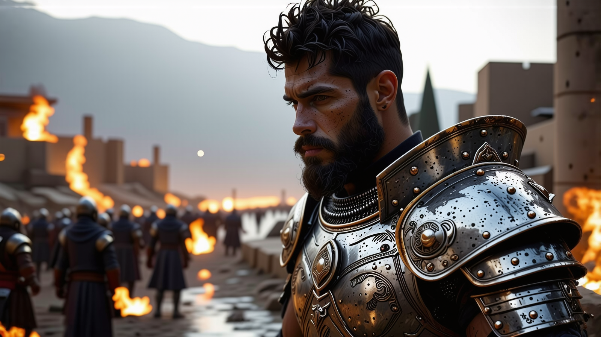
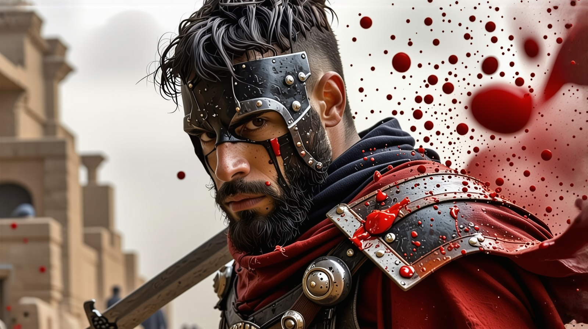

Древен Левант – земя на богове и войни
Преди бурята на войната да помете земите на Левант, преди кръвта да напои пясъка и съдбите на три души да се преплетат в пламъци, имаше време на мир. Но този мир беше измамен, крехък като стъкло, готов да се разбие при първия удар.
Левант беше земя, където търговските кервани носеха злато и подправки, където храмовете се издигаха като символи на боговете, но също така и където ножовете дебнеха в сенките, а предателствата се трупаха като пясък в пустинята.
Когато управителят Астар-Баал узурпира трона на Сидон, обеща ред, но донесе хаос. Той бе жесток, безмилостен мъж, който потискаше народа с данъци и терор, като пращаше наемници да смазват всеки опит за бунт. Градовете горяха, селата бяха изравнявани със земята, а земята пропиваше страха на хората.
Точно в тези мрачни времена се родиха три съдби, които щяха да променят хода на историята.
СЕЛИЦИЯ – ДЪЩЕРЯТА НА ВРАГОВЕТЕ
Селиция не беше обикновена жена. Тя беше дъщеря на свещеник от храма на Танит – богинята на плодородието и войната. Израснала сред пергаменти и ритуали, тя бе научена, че боговете държат съдбата на хората в ръцете си.
Но когато управителят Астар-Баал екзекутира баща ѝ под претекст за измяна, Селиция разбра истината – боговете не спасяват, хората трябва сами да коват съдбата си.
Тя бе едва на шестнадесет, когато избяга от храма, носейки със себе си само кинжал и знанията, които баща ѝ бе предал. Скитайки из опожарените земи, тя се научи да оцелява, да се защитава и да не вярва на никого.
Но съдбата имаше други планове.

АФРОДИ – УБИЕЦЪТ С ЧЕСТ
Афроди бе син на генерал в армията на предишния владетел – мъж, който бе убит, когато Астар-Баал узурпира трона. Вместо да бъде екзекутиран, младият Афроди бе взет като личен наемник на новия управител. Обучен в изкуството на убийството, той се превърна в сянка, мечът му шепнеше песни на смъртта в нощта.
Но колкото и да служеше, никога не можеше да заглуши гласовете на падналите. Всяко убийство тежеше на съвестта му, всеки вик на жертвите му напомняше, че е част от машина за потисничество.
Една нощ, когато му бе наредено да убие дете – син на бунтовник, който дори не познаваше – той отказа. И в този момент той от убиец се превърна в беглец.

ГАР – НАЕМНИКЪТ БЕЗ СТРАНА
Гар беше мъж, чиято лоялност можеше да бъде купена... или поне така вярваха хората. Той бе роден в бедност, израснал по бойните полета като наемник. Силата му беше легендарна, мечът му – винаги изцапан с кръв.
Но Гар имаше свои правила. Той не убиваше невинни, не предаваше онези, които му плащаха честно. И точно тази чест му спечели много врагове.
Една вечер, след като отказа да заколи пленници на едно село, той беше предаден от собствените си хора. Бяха го оставили вързан в пустинята, да бъде погълнат от горещината или зверовете.
Но съдбата имаше друг план за него.
СЪДБИТЕ
Тримата не се срещнаха като приятели. Те се срещнаха като хора с различни минали, обединени от една обща цел – да оцелеят, да се борят, да свалят тиранията, която бе сковала земята им.
Тяхната история започна в нощта, когато гражданската война пламна като огън в пустинята.
Това бе нощта, в която мечовете им се кръстосаха за първи път.
Това бе нощта, в която започнаха да пишат песента на съдбата.